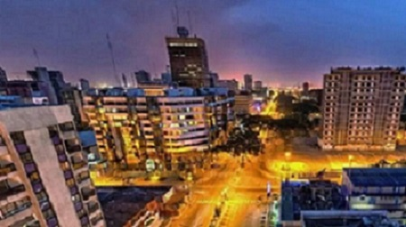
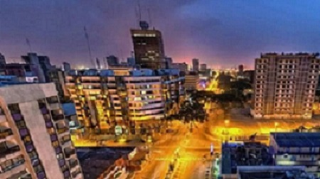

ABIDJAN SITE TOURISTIQUE
-
Abidjan est la capitale économique de la Côte d'Ivoire, dont la capitale administrative et politique est Yamoussoukro. Elle est également la ville la plus
peuplée de l'Afrique de l'Ouest francophone, et la deuxième plus grande ville et troisième plus grande agglomération au sein de la francophonie. Elle compte
selon les autorités du pays, en 2014, 4 707 000 habitants soit 21 % de la population totale du pays, tandis qu'elle représenterait 60 % du produit intérieur brut(PIB)
du pays. Seule Lagos, l'ancienne capitale du Nigeria la dépasse en nombre d'habitants dans cette région. Considérée comme le carrefour culturel ouest-africain,
Abidjan connaît une forte croissance caractérisée par une forte industrialisation et une urbanisation galopante. L'agglomération d'Abidjan est située au sud
de la Côte d'Ivoire, au bord du golfe de
Guinée et traversée par la lagune Ébrié. Elle s'étend sur une superficie de 57 735 ha. Elle représente, à vol d'oiseau, une étendue d'une douzaine de kilomètres
du nord au sud et d'une dizaine d'est en ouest. Cette superficie contient encore des îlots, de plus en plus rares, où règne une végétation fournie. La ville d'Abidjan
s'étend sur une superficie de 422 km2 alors que le district d’Abidjan s'étend sur 2 119 km2.
 
